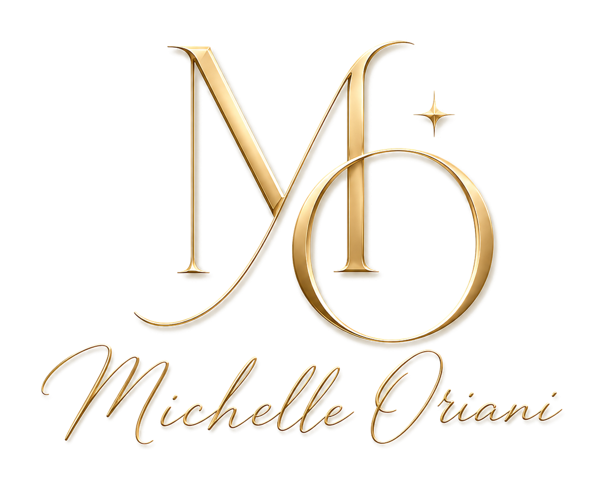

Ouvir a sua vontade
Três perguntas para perceber o que você deseja, o que cabe na sua vida e o que pesa na hora de responder.

Você diz sim para não decepcionar
e depois sente que deixou você por último?
Este guia é um convite para fazer uma pausa, ouvir o que você quer e escolher uma resposta que também respeite o seu tempo e os seus limites.
Quero meu guia gratuitoPrefiro ler agoraTrês perguntas para perceber o que você deseja, o que cabe na sua vida e o que pesa na hora de responder.
Frases práticas para pedir tempo, oferecer apenas o que você consegue e recusar um pedido com clareza.
Espaço para escrever e escolher uma situação do seu dia em que você quer experimentar uma resposta diferente.
Se você se reconheceu nessas situações e quer cuidar do que se repete nas suas relações, me mande uma mensagem. Vamos conversar sobre o meu acompanhamento e o que você deseja mudar para viver com mais leveza e respeito por si.
Quero conversar com a Michelle